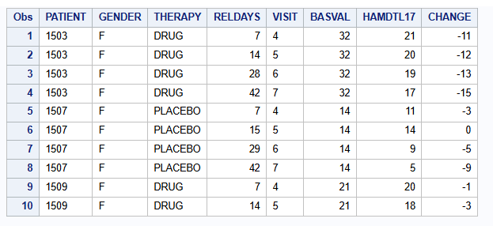
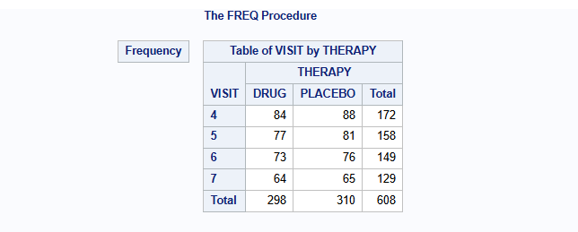
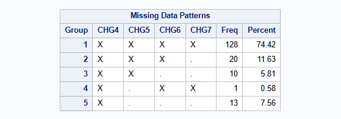
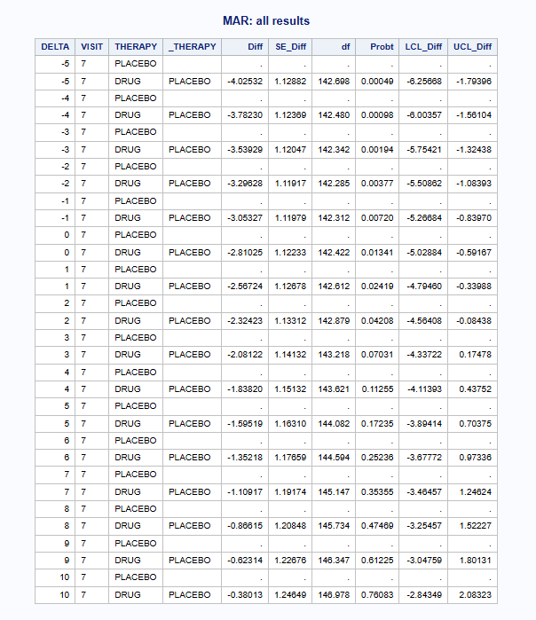
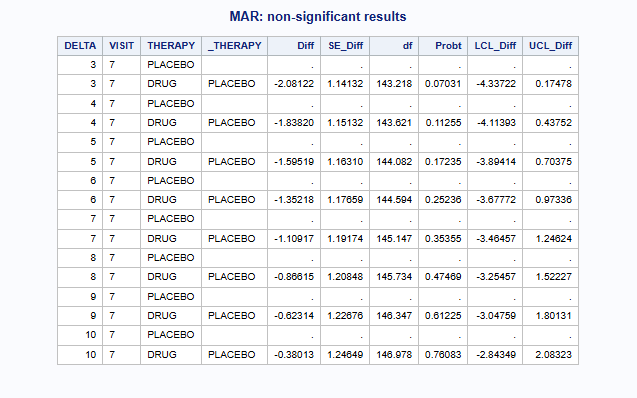
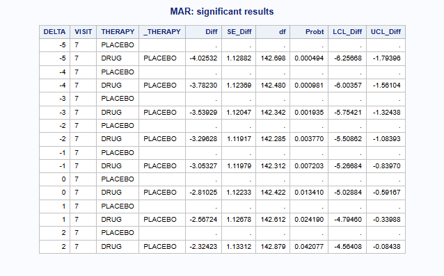
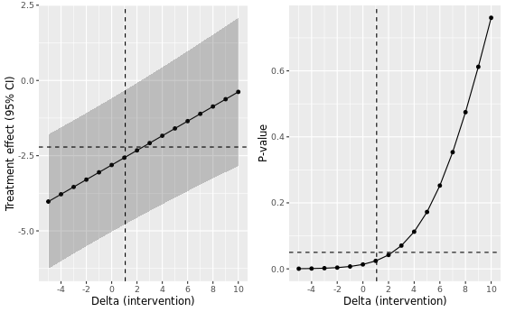
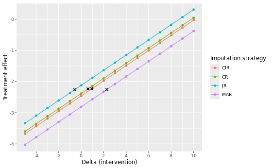
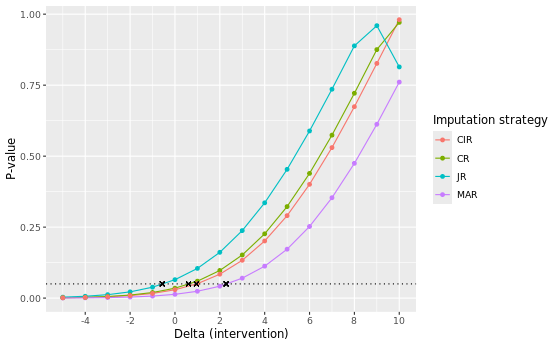

proc print data=dat (obs=10);
var PATIENT GENDER THERAPY RELDAYS VISIT BASVAL HAMDTL17 CHANGE;
run;SAS Tipping Point (Delta Adjustment): Continuous Data
Tipping Point / Delta Adjustment
Reference-based multiple imputation (rbmi)
Methodology introduction
The concept of delta adjustment and tipping point analysis builds on the framework of reference-based multiple imputation (rbmi) as seen on its respective CAMIS webpage. The use of the five macros (Roger 2022) in SAS for the following standard and reference-based multiple imputation approaches are introduced there:
Missing At Random (MAR)
Jump to Reference (J2R)
Copy Reference (CR)
Copy Increment from Reference (CIR)
Essentially, the workflow comes down to sequentially running the five macro’s:
Part1A()declares the parameter estimation model and checks consistency with the dataset. It builds a master dataset which holds details of the current job (run of the macros in sequence). It also builds indexes for the classification variables, which may be either numeric or character.Part1B()fits the parameter estimation model using the MCMC procedure and draws a pseudo-independent sample from the joint posterior distribution for the linear predictor parameters and the covariance parameters.Part2A()calculates the predicted mean under MAR, and under MNAR for each subject based on their withdrawal pattern once for each draw of the linear predictor parameter estimates. The choice of MNAR is controlled by the method used, which may vary from subject to subject.Part2B()imputes the intermediate missing values using MAR and the trailing missing values using MNAR, by deriving the conditional distribution for the missing values conditional on the observed values and covariates, using the appropriate sampled covariance parameter estimates.Part3()carries out a univariate ANOVA analysis at selected time points usually based on the same covariates as the parameter estimation model. It then combines the least-squares means and their differences using the MIANALYZE procedure to provide final results. It is in this macro which handles the Delta methods.
The five macros are available at LSHTM DIA Missing Data under Imputation based approaches > Reference-based MI via Multivariate Normal RM (the “five macros” and MIWithD) > Downloads. Please make sure to familiarize yourself with its functionalities before checking this tutorial. For more details, see the user guide available upon download (Roger 2017).
Data
The same publicly available dataset from an antidepressant clinical trial that was used to illustrate rbmi is again used for this tutorial. This dataset is also used in the R version of this CAMIS webpage and the quickstart vignette of the rbmi R package.
The relevant endpoint for the antidepressant trial was assessed using the Hamilton 17-item depression rating scale (HAMD17), which was measured at baseline and subsequently at weeks 1, 2, 3, 4 and 6 (visits 4-7). Study drug discontinuation occurred in 24% (20/84) of subjects in the active drug group, compared to 26% (23/88) of subjects in the placebo group. Importantly, all data after study drug discontinuation are missing and there is a single intermittent missing observation.

The number of patients per visit and treatment group are:
proc freq data=dat;
table VISIT*THERAPY / norow nocol nopercent nocum;
run;
The mean change from baseline of the HAMD17 endpoint per visit and treatment group using only the complete cases are:
proc means data=dat n mean nonobs;
class VISIT THERAPY;
var CHANGE;
run;
The missingness pattern is:
proc transpose data=dat out=HAMD_wide(drop=_NAME_) prefix=CHG;
by PATIENT THERAPY BASVAL;
id VISIT;
var CHANGE;
run;
proc mi data=HAMD_wide nimpute=0 displaypattern=NOMEANS;
var CHG4 CHG5 CHG6 CHG7;
run;
There is a single patient with an intermittent missing observation at visit 5, which is patient 3618. Special considerations need to be taken when applying delta adjustments to intermittent missing observations like this one (more on this below).
Tipping point analysis and delta adjustment
Methodology introduction
When analyses for endpoints are performed under MAR or MNAR assumptions for missing data, it is important to perform sensitivity analyses to assess the impact of deviations from these assumptions. Tipping point analysis (or delta adjustment method) is an example of a sensitivity analysis that can be used to assess the robustness of a clinical trial when its result is based on imputed missing data.
Generally, tipping point analysis explores the influence of missingness on the overall conclusion of the treatment difference by shifting imputed missing values in the treatment group towards the reference group until the result becomes non-significant. The tipping point is the minimum shift needed to make the result non-significant. If the minimum shift needed to make the result non-significant is implausible, then greater confidence in the primary results can be inferred.
Tipping point analysis generally happens by adjusting imputing values by a so-called delta values. The observed tipping point is the minimum delta needed to make the result non-significant. Mostly a range of delta values is explored and only imputed values from the active treatment group are adjusted by the delta value. However, delta adjustments to the control group are possible as well. Naturally, the range of acceptable values for delta should be agreed a priori, before taking this approach.
For an extensive discussion on delta adjustment methods, we refer to Cro et al. 2020.
Tipping point analysis: MAR approach
As mentioned, we will illustrate the use of the so-called five macros in SAS for delta adjustment and tipping point analysis. These are available at LSHTM DIA Missing Data under Imputation based approaches > Reference-based MI via Multivariate Normal RM (the “five macros” and MIWithD) > Downloads.
Perform tipping point analysis
To conduct a tipping point analysis under the MAR assumption, we simply specify method = MAR under Part2A() of the five macros. Generally, the rest of Part1 and Part2 are the same as in the scenario without any delta adjustment.
%part1A(jobname = HAMD,
Data=dat,
Subject=PATIENT,
RESPONSE = CHANGE,
Time = VISIT,
Treat = THERAPY,
Covbytime = BASVAL,
Catcov = GENDER);
%part1B(jobname = HAMD,
Ndraws = 500,
thin = 10,
seed = 12345);
%part2A(jobname = HAMD_MAR,
inname = HAMD,
method = MAR);
%part2B(jobname = HAMD_MAR,
seed = 12345);Then, in Part3(), we create a series of delta values that increases sequentially for the intervention group by changing the Delta argument within a do loop, and setting Dgroups = DRUG and Dlag = 1 0 0 0 (more on this below).
A clear description of these arguments is given in the documentation:
Delta: A vector of Delta values from visit 1 up to the final visit (default is not applying a delta adjustment)Dlag: A vector of multipliers for each Lag after withdrawal for the Delta values (default is all values of 1)Dgroups: The treatment groups to which Delta should be applied (default is all treatment groups)
To automate the tipping point analysis, you can create a new macro like shown below. The first part of this macro prints all results, while the second part prints the non-significant and significant results separately by filtering on Probt.
data all_results;
length DELTA 8 VISIT $10 THERAPY $20 _THERAPY $20 Diff SE_Diff df Probt LCL_Diff UCL_Diff 8;
stop;
run;
%macro part3_TP;
%do delta = -5 %to 10 %by 1;
%part3(Jobname = HAMD_MAR, anref=PLACEBO, Delta = &delta &delta &delta &delta, DLag = 1 0 0 0, DGroups = DRUG, Label=MAR);
data current_result;
set HAMD_MAR_OUT(keep = VISIT THERAPY _THERAPY Diff SE_Diff df Probt LCL_Diff UCL_Diff);
DELTA = δ
run;
proc append base=all_results data=current_result force nowarn;
run;
%end;
proc print data = all_results noobs label;
where VISIT = "7";
var DELTA VISIT THERAPY _THERAPY Diff SE_Diff df Probt LCL_Diff UCL_Diff;
title "MAR: all results";
run;
proc sql noprint;
create table delta_ge_05 as
select distinct DELTA
from all_results
where Probt >= 0.05 and not missing(Probt) and VISIT = "7";
select DELTA into :non_sig_delta separated by ' '
from delta_ge_05;
create table delta_lt_05 as
select distinct DELTA
from all_results
where Probt < 0.05 and not missing(Probt) and VISIT = "7";
select DELTA into :sig_delta separated by ' '
from delta_lt_05;
quit;
proc print data = all_results noobs label;
where DELTA in (&non_sig_delta.) and VISIT = "7";
var DELTA VISIT THERAPY _THERAPY Diff SE_Diff df Probt LCL_Diff UCL_Diff;
title "MAR: non-significant results";
run;
proc print data = all_results noobs label;
where DELTA in (&sig_delta.) and VISIT = "7";
var DELTA VISIT THERAPY _THERAPY Diff SE_Diff df Probt LCL_Diff UCL_Diff;
title "MAR: significant results";
run;
%mend;
%part3_TP;

To determine the exact tipping point between the last “significant” delta and the first “non-significant” delta, you may manually perform linear interpolation for DELTA, Diff, LCL_Diff and UCL_Diff at Probt = 0.05.
Note: In the five macros, delta adjustments happen right after data imputation under MAR or MNAR (using reference-based imputation approaches) in Part2, but before implementing the analysis model in Part3. Sensitivity analyses can therefore be performed without having to refit the imputation model, which is computationally efficient. This approach is considered a marginal delta adjustment approach, because the delta is simply added to the mean of the conditional multivariate normal distribution (conditional on the observed values and the covariates) for the imputation model (Roger 2017).
Visualize results
A nice visualization of this tipping point analysis for the MAR approach is shown below. The dashed horizontal line indicates a p-value of 0.05 in the left plot and no treatment effect in the right plot.

We clearly see that the p-value under MAR reaches a tipping point from 3 onward in the range of delta’s considered.
Comparison with rbmi MNAR approaches
Summary of results
In the table below we present the results of the different imputation strategies with varying number of multiple imputation draws, M = 500 and M = 5000. Note that the results can be slightly different from the results above due to a possible different seed. The estimates show the contrast at visit 7 between DRUG and PLACEBO (DRUG - PLACEBO). Delta adjustments were applied to all imputed missing data, except intermittent missing data, in the intervention group only.
| Method | Delta control | Delta intervention at TP | Estimate at TP | 95% CI | P-value | Original estimate | Original p-value |
|---|---|---|---|---|---|---|---|
| MI - MAR (M=500) | 0 | 3 | -2.081 | -4.337 to 0.175 | 0.0703 | -2.810 | 0.0134 |
| MI - MAR (M=5000) | 0 | 3 | -2.096 | -4.353 to 0.161 | 0.0684 | -2.825 | 0.0130 |
| MI - MNAR J2R (M=500) | 0 | -1 | -2.365 | -4.604 to -0.125 | 0.0386 | -2.122 | 0.0650 |
| MI - MNAR J2R (M=5000) | 0 | -1 | -2.387 | -4.617 to -0.157 | 0.0361 | -2.144 | 0.0611 |
| MI - MNAR CR (M=500) | 0 | 1 | -2.141 | -4.370 to 0.089 | 0.0597 | -2.384 | 0.0350 |
| MI - MNAR CR (M=5000) | 0 | 1 | -2.157 | -4.377 to 0.062 | 0.0566 | -2.400 | 0.0330 |
| MI - MNAR CIR (M=500) | 0 | 1 | -2.218 | -4.446 to 0.010 | 0.0510 | -2.461 | 0.0296 |
| MI - MNAR CIR (M=5000) | 0 | 2 | -1.995 | -4.229 to 0.240 | 0.0798 | -2.481 | 0.0276 |
Of all considered approaches, the MAR approach yields the largest delta adjustment at its tipping point, with a delta intervention of 3 at both M = 500 and M = 5000. This indicates that the MAR assumption is the most robust against slight deviations of its conditions. Notice that for the MNAR JR approach we included, for completeness, tipping point analyses to know when the results switch from non-significant to significant. Correspondingly, two negative delta’s (-1) are found at the tipping point. This is expected, given that the original analyses are non-significant (p ~ 0.0650 and p ~ 0.0611) and a tipping point analysis here aims to find the point at which the analysis turns to be significant, instead of non-significant.
Visual comparison


Flexible delta adjustments
So far, we have only considered simple delta adjustments that add the same value to all imputed missing data. However, you may want to implement more flexible delta adjustments for missing data following an intercurrent event (ICE), where the magnitude of the delta varies depending on the distance of the visit from the ICE visit.
To enable flexible delta adjustments, Part3() includes three delta arguments: Delta, DLag and DGroups. Although these arguments were introduced earlier in the tutorial, we will now elaborate on how exactly these arguments allow for flexible delta adjustments with a few examples taken from the advanced functionality vignette of the rbmi R package.
Scaling delta by visit
Assume a setting with 4 visits and the user specified Delta = 5 6 7 8 and DLag = 1 2 3 4. For a subject for whom the first visit affected by the ICE is visit 2, these values of Delta and DLag would imply the following delta adjustments:
| Visit 1 | Visit 2 | Visit 3 | Visit 4 | |
|---|---|---|---|---|
| Delta | 5 | 6 | 7 | 8 |
| DLag | 0 | 1 | 2 | 3 |
| Delta * DLag | 0 | 6 | 14 | 24 |
| Cumulative sum | 0 | 6 | 20 | 44 |
That is, the subject would have a delta adjustment of 0 applied to visit 1, 6 for visit 2, 20 for visit 3 and 44 for visit 4.
Assume instead, that the subject’s first visit affected by the ICE was visit 3. Then, the above values of Delta and DLag would imply the following delta adjustment:
| Visit 1 | Visit 2 | Visit 3 | Visit 4 | |
|---|---|---|---|---|
| Delta | 5 | 6 | 7 | 8 |
| DLag | 0 | 0 | 1 | 2 |
| Delta * DLag | 0 | 0 | 7 | 16 |
| Cumulative sum | 0 | 0 | 7 | 23 |
And thus the subject would have a delta adjustment of 0 applied to visits 1 and 2, 7 for visit 3 and 23 for visit 4.
Another way of using these arguments is to set Delta to the difference in time between visits and DLag to be the amount of delta per unit of time. For example, let’s say that visits occur on weeks 1, 5, 6 and 9 and that we want a delta of 3 to be applied for each week after an ICE. For simplicity, we assume that the ICE occurs immediately after the subject’s last visit which is not affected by the ICE. This this could be achieved by setting Delta = 1 4 1 3, i.e. the difference in weeks between each visit, and DLag = 3 3 3 3.
Assume a subject’s first visit affected by the ICE was visit 2, then these values of Delta and DLag would imply the following delta offset:
| Visit 1 | Visit 2 | Visit 3 | Visit 4 | |
|---|---|---|---|---|
| Delta | 1 | 4 | 1 | 3 |
| DLag | 0 | 3 | 3 | 3 |
| Delta * DLag | 0 | 12 | 3 | 9 |
| Cumulative sum | 0 | 12 | 15 | 24 |
Let’s now consider the antidepressant data again. Suppose we apply a delta adjustment of 2 for each week following an ICE in the intervention group only. For example, if the ICE took place immediately after visit 4, then the cumulative delta applied to a missing value from visit 5 would be 2, from visit 6 would be 4, and from visit 7 would be 6.
To program this, we would define Delta, DLag and DGroups in Part3() of the five macros as follows:
%part3(Jobname = HAMD_MAR,
anref=PLACEBO,
Delta = 2 2 2 2,
DLag = 1 1 1 1,
DGroups = DRUG,
Label=MAR);Notice that DLag = 1 1 1 1 is the default for this argument in SAS, you may also leave it unspecified in this case.
Fixed delta
As already illustrated in the tipping point analysis assuming MAR above, you may also add a simple, fixed delta using the Delta and DLag arguments. To do this, Delta should be the same value repeated for each visit, e.g. 5 5 5 5, while DLag should be 1 0 0 0. This ensures a delta of 5 is added to each imputed missing value following an ICE, which we here assume to occur at the visit 2:
| Visit 1 | Visit 2 | Visit 3 | Visit 4 | |
|---|---|---|---|---|
| Delta | 5 | 5 | 5 | 5 |
| Dlag | 0 | 1 | 0 | 0 |
| Delta * dlag | 0 | 0 | 0 | 0 |
| Cumulative sum | 0 | 5 | 5 | 5 |
To apply this delta = 5 to both groups we leave DGroups unspecified.
%part3(Jobname = HAMD_MAR,
anref=PLACEBO,
Delta = 5 5 5 5,
DLag = 1 0 0 0,
Label=MAR);In the five macros, delta adjustments are not applied to intermittent missing observations, but only to missing observations after withdrawal. From the documentation, it seems like this cannot be altered. In contrast, the choice of which missing data to apply delta adjustments to can be more freely managed using the rbmi R package. This may lead to discrepancies between tipping point analyses conducted in SAS and R, and may have important implications for datasets with high proportions of intermittent missing values in particular.
Note: By making use of the DGroupsV argument in Part3 (see five macros documentation) one can specify a variable in the dataset that indicates whether a delta adjustment should be applied to any imputed value for the record after withdrawal. The five macros documentation states that “As an alternative to DGroups=, this option specifies a numeric variable with a logical value indicating whether Delta should be applied to any imputed value for the record. This variable should be Numeric holding a logical value.”. However, from our experience the intermittent missing values are not delta adjusted using this argument, only the missing values after withdrawal.
Note: By making use of the DeltaV argument in Part3 (see five macros documentation) one can set specific delta adjustments by records.
References
Cro et al. 2020. Sensitivity analysis for clinical trials with missing continuous outcome data using controlled multiple imputation: A practical guide. Statistics in Medicine. 2020;39(21):2815-2842.
Roger 2022. Other statistical software for continuous longitudinal endpoints: SAS macros for multiple imputation. Addressing intercurrent events: Treatment policy and hypothetical strategies. Joint EFSPI and BBS virtual event.
Roger 2017. Fitting reference-based models for missing data to longitudinal repeated-measures Normal data. User guide five macros.